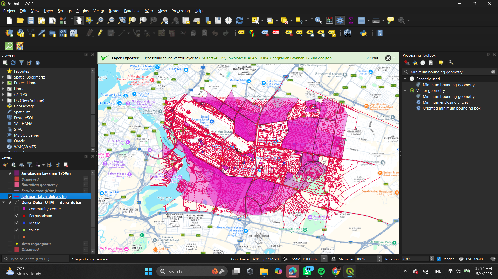
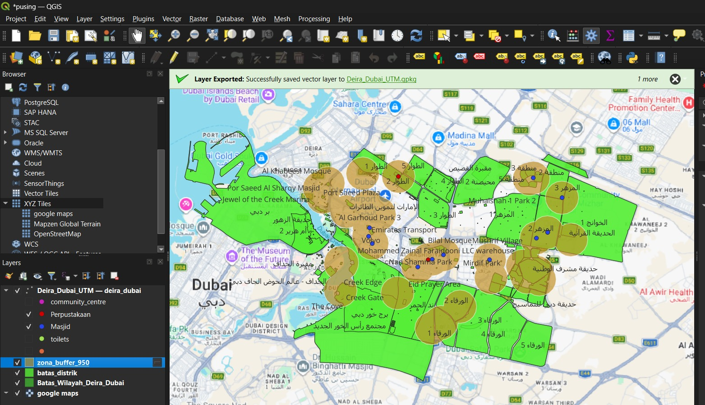
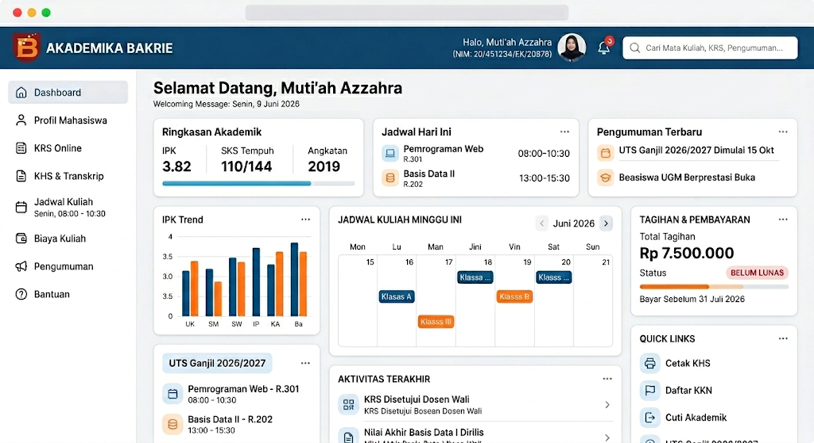
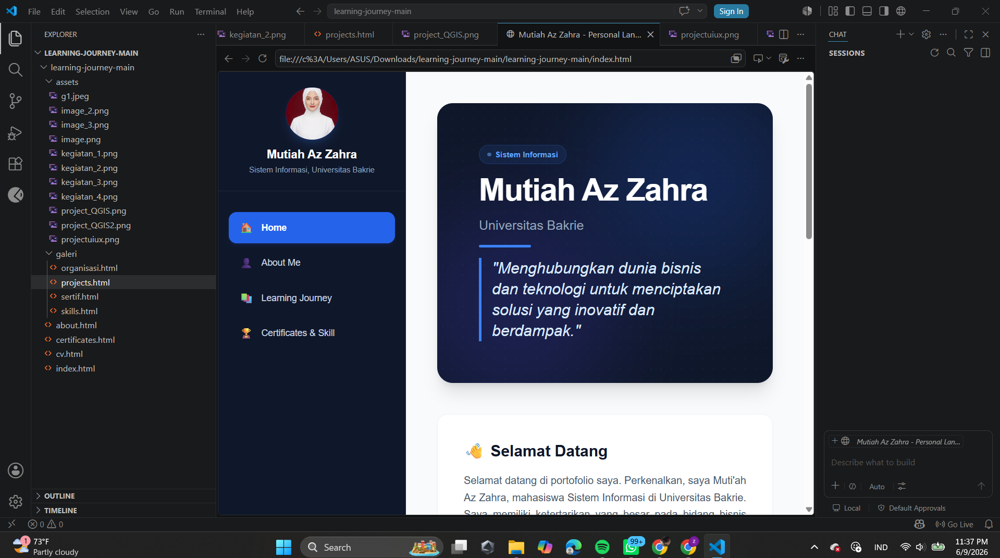

Kembali ke Home
Showcase & Development
Proyek & Hasil Karya
Koleksi pengembangan sistem, manajemen basis data, dan aplikasi yang telah dibangun.

🔍 Klik untuk Memperbesar
Sistem Informasi Geografis
Analisis line service
Menganalisis jaringan jalan di daerah Dubai menggunakan line servica
QGIS
GeoJSON

🔍 Klik untuk Memperbesar
Sistem Informasi Geografis
Pemetaan Lokasi Fasilitas Publik
Analisis spasial persebaran fasilitas umum dan kepadatan wilayah menggunakan pemrosesan data vektor dan citra satelit.
QGIS
GeoJSON

🔍 Klik untuk Memperbesar
UI/UX Prototype
Desain Interface Layanan Akademik
Riset rancangan antarmuka aplikasi portal akademik mahasiswa dengan fokus pada pendekatan kemudahan navigasi *user-centric*.
Figma
Wireframing

🔍 Klik untuk Memperbesar
Sistem Informasi Geografis
Pembuatan web data diri
membuat web data diri menggunakan html,css,dan js dengan tampilan yang kekinian
html
css
js